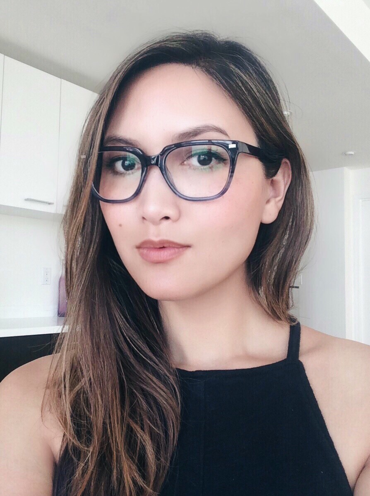

About Me
Hello, world! My name is Natalie Loman and I'm currently learning how to be web developer.
Right now, I'm enrolled in a coding bootcamp in the process of making a career change from the academic publishing industry. I have over a decade of experience in scientific/technical publishing and public relations and have honed a diverse set of transferable skills to become a succesful developer.
Within the publishing world, I’ve worked in fast-paced, deadline-oriented environments with responsibilities including copywriting, editing, quality control, and project management. I have a track record of establishing successful editorial priorities for the team and overseeing implementation of effective process optimization plans. I'm naturally meticulous and comfortable working under tight schedules, so I produce high quality, accurate work with fast turnaround times. I excel at learning new tasks, adapt quickly to changing workflows, and leverage strategy, problem-solving, and interpersonal skills to tackle challenges.
My work in health and biotech public relations provided me strong agency experience in a client-facing role. This involved strategy development, media relations, executive visibility plans, thought leadership campaigns, project management, technical writing, analysis, and communications services for a number of clients ranging from government and national research institutes to pharma and biotech startups. I am professionally driven by my genuine passion for turning complex scientific and technical content into relevant, meaningful stories, for the dissemination of accessible information, and the advancement of knowledge.
Fun Facts!
- I'm a San Diego native, but spent most of my adult life in the Bay Area.
- I can't live without: music, pizza, and family.
- I love to travel. So much so, that I spent several years working remotely while living in London, Berlin, Istanbul, Lisbon, Antalya, and New York.
- I love modernist, minimal architecture and design.
- I held a decapitated human head in my hands at the age of 17.